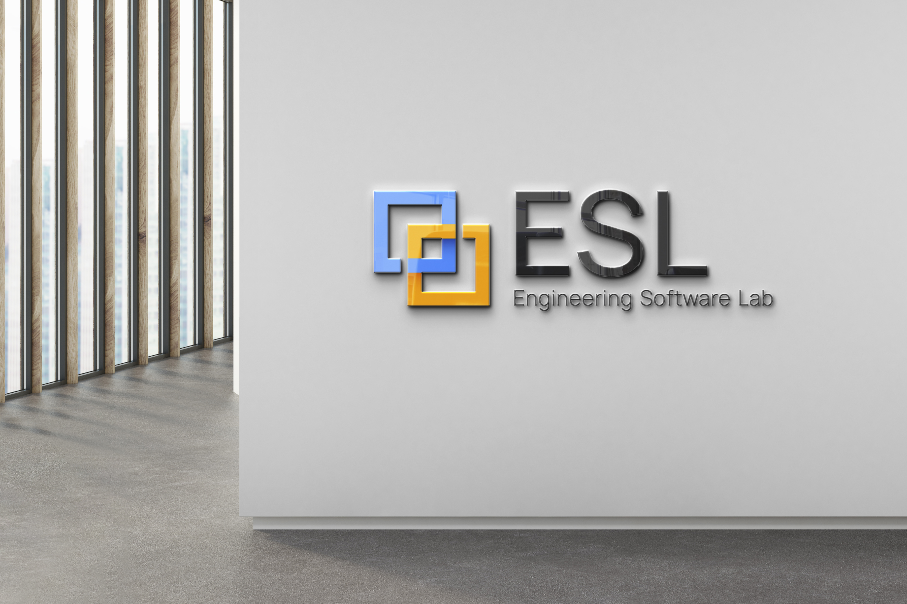
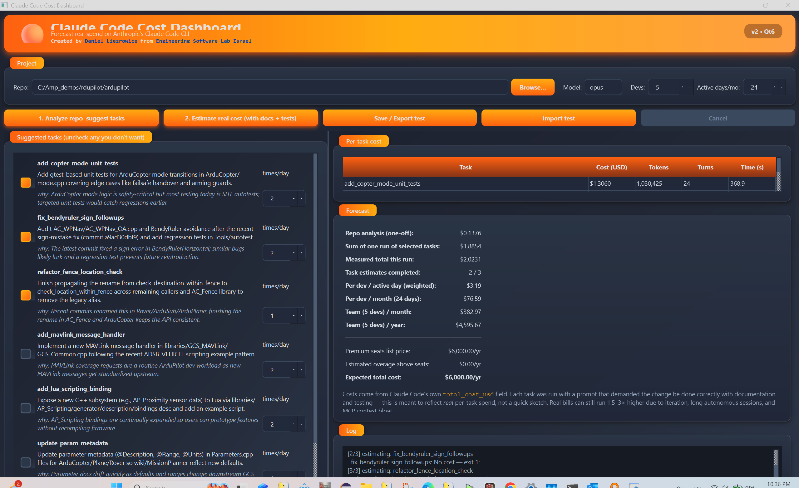
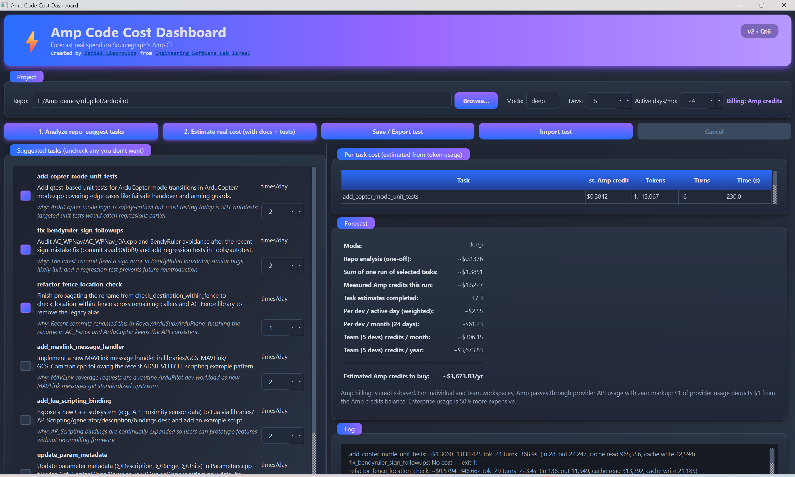
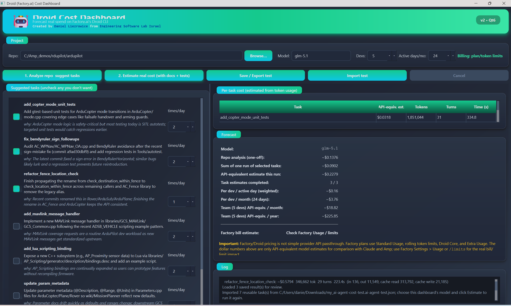

AI Coding Agent Cost Estimation
A practical, customer-ready process for analyzing a repository, selecting real engineering tasks, and estimating the cost of implementing code, documentation, and tests before a long AI-agent run begins.

Large repositories create cost uncertainty.
A coding agent may read thousands of files, plan multiple implementation paths, generate tests, retry failures, and consume cached context differently in every provider.
Without a dashboard
- No quick way to compare Claude, Amp, and Droid runs.
- Task scope is unclear before the expensive implementation phase.
- Timeouts, CLI failures, and stale logs confuse operators.
- One-off tests are hard to repeat on another machine or dashboard.
With the ESL dashboards
- Analyze the repo once, select candidate tasks, estimate selected work.
- Use provider-specific pricing logic rather than one generic formula.
- Save and import tests for repeatable customer demonstrations.
- Keep runs bounded with timeouts, cancellation, and clear progress logs.
Two-stage estimation keeps the run understandable.
The dashboards separate repository analysis from per-task estimation. This makes it easy to explain where the money goes: discovery, selected task work, and team-scale forecast.
Choose repository and provider
Select a local repo and the dashboard that matches the target agent: Claude, Amp, or Droid.
Analyze the codebase
The provider CLI inspects the repo and returns practical candidate tasks with an analysis cost.
Select tasks safely
Safety mode selects only the first task by default; operators can select more when the machine can handle longer runs.
Estimate implementation work
The dashboard asks for code, documentation, and test effort for each selected task, records usage, and reports totals.
Save or export the test
Exported JSON includes repo path, selected tasks, settings, analysis cost, and results so another dashboard can replay the scenario.
Estimate cost from measured usage, not guesses.
Each dashboard reads the provider CLI output and applies the relevant pricing model. When the provider directly reports cost, that value is preferred.
token_cost = (input_tokens × input_rate
+ output_tokens × output_rate
+ cache_read × cache_read_rate
+ cache_write × cache_write_rate) / 1,000,000
Claude dashboard
- Uses Claude Code reported cost when available.
- Shows analysis cost and selected task costs as the direct baseline.
- Default model is Opus for high-capability enterprise estimates.
Amp dashboard
- Amp is credits-based, not per-seat pricing.
- Smart mode is priced as Opus-class according to current Amp behavior.
- Forecast shows token/credit usage instead of fake subscription totals.
Droid dashboard
- Shows API-equivalent estimates from observed token usage.
- Real Factory bill depends on plan limits, Core usage, and Extra Usage.
- Operators should compare final billing in Factory usage tools.

Claude Code Cost Dashboard
- Direct Claude Code cost baseline.
- Best for explaining Opus/Sonnet implementation budgets.
- Exports tests for customer replay.

Amp Cost Dashboard
- Credit-oriented usage estimate.
- No misleading seat-price model.
- Shows cache and token breakdown.

Droid Cost Dashboard
- API-equivalent estimate for Factory Droid runs.
- Separates observed usage from real plan billing.
- Supports imported tests and repeat runs.
The estimation process protects the workstation.
Large repositories can produce slow CLI calls and heavy context processing. The dashboards use bounded subprocess handling and clear UI states to avoid accidental reruns and confusing logs.
Customer-ready behavior
- Old logs are cleared on restart, re-analysis, and import.
- Black console windows are hidden during dashboard actions.
- Timeout and cancellation labels are friendly, not raw stack traces.
- Process-tree cleanup kills child commands when the operator cancels.
- Timeout disables immediate rerun until the operator re-analyzes or imports a saved test.
- Save/export confirms the full file path and creates missing folders.
Install once, then run provider-specific dashboards.
The dashboards are local Python/PyQt tools. Each provider CLI must already be installed and authenticated before its dashboard can collect real usage data.
- Windows workstation with enough RAM for the target repository.
- Python 3.11+ and Git installed.
- Claude Code, Amp, and/or Droid CLI installed and logged in.
- A local repository path for the project being analyzed.
git clone https://github.com/zuwasi/ai-coding-agents-cost-calculators.git
cd ai-coding-agents-cost-calculators
# Install Python dependencies
python -m venv .venv
.venv\Scripts\activate
pip install -r requirements.txt
# Run the dashboard you need
python qt_dashboard\claude_cost_dashboard.py
python amp_dashboard\amp_cost_dashboard.py
python droid_dashboard\droid_cost_dashboard.py
Recommended demo flow
- Start with a small or medium repository to verify authentication and parsing.
- Run analysis and review the suggested tasks before selecting more work.
- Estimate one task first; add tasks only when the workstation is stable.
- Use Save / Export test after a good run so the scenario can be repeated.
- Import the JSON in another dashboard to compare providers on the same task list.
Use estimates as engineering guidance, not invoices.
The dashboards are built to explain cost drivers before a real implementation. Final cost still depends on actual agent decisions, retries, test failures, cache behavior, provider pricing changes, and the customer’s plan.
Key concepts
- Analysis cost: repository discovery and task suggestion.
- Task estimate: projected code, docs, and tests for selected work.
- Provider model: Claude direct cost, Amp credits, or Droid API-equivalent estimate.
- Forecast: per-task usage scaled into team planning assumptions.
Make AI coding costs explainable before they happen.
Engineering Software Lab turns provider CLI usage into a repeatable decision process for demos, customer planning, and internal engineering governance.
For engineering
- See which tasks are likely expensive.
- Compare providers on the same saved task set.
- Reduce workstation freezes and runaway CLI calls.
For management
- Translate token usage into budget conversations.
- Explain pricing differences without misleading seat math.
- Keep customer demos repeatable and auditable.